About
MICA is a petrographic analysis software company, building advanced AI-powered tools for the mining sector. We use Multimodal Imaging to automate the Classification and Analysis of mineral grains in thin-sections, allowing our clients to explore further and get results faster than traditional analog setups.
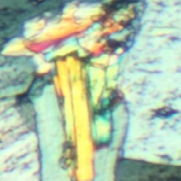
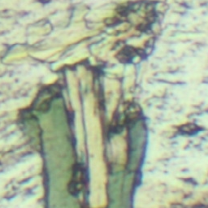
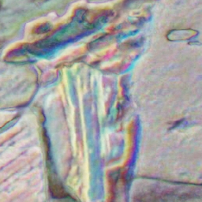
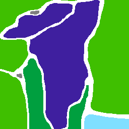
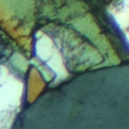
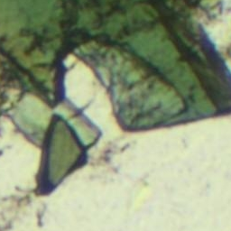
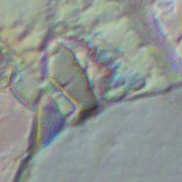
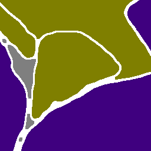
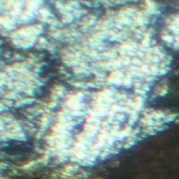
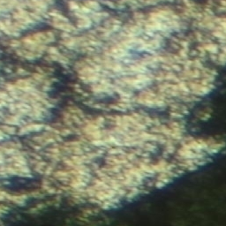
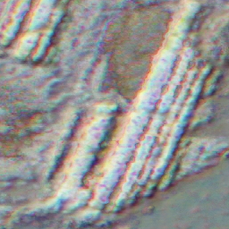
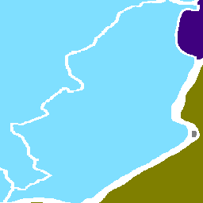
Why Choose MICA?
With MICA’s AI-powered technology, you gain a faster, more precise way to analyze rock samples while preserving information pertaining to mineral assemblages and alteration. Our cutting-edge solutions can help you stay ahead in the industry, turning complex datasets into clear, actionable insights.

Services
MICA is transforming mineral analysis with AI-driven solutions that make identifying precious metals and minerals faster and more precise. Here’s how we achieve this:
IMAGING

High-Resolution Sample Visualization Our software allows users to import high-resolution images of rock samples, revealing microscopic details with incredible clarity. Users can easily upload their high-resolution imagery by simply dragging and dropping their images into the MICA interface for quick and effective analysis.
CLASSIFICATION

AI-Powered Mineral Identification Using AI, we classify and identify minerals instantly, providing accurate, real-time results that eliminate the guesswork of traditional analysis. Our system automatically provides grain size distribution and modal analysis of identified minerals in the section.
ANALYSIS

Actionable Data for Smarter Decisions Our AI analytics platform delivers deeper insights into the mineralogy of your samples—providing context-rich data for direct implementation into your resource model. With these data-driven insights, you can make smarter decisions about resource targeting and make sound inferences about recovery potential.